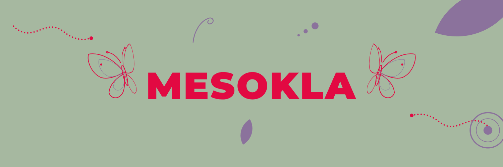
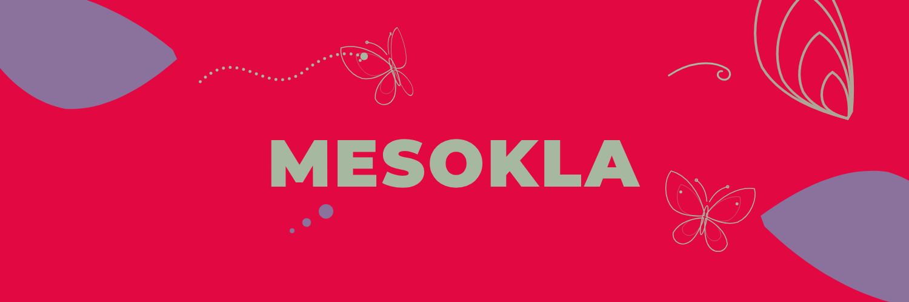
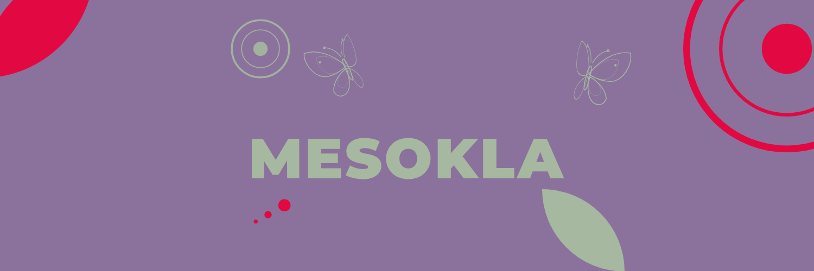
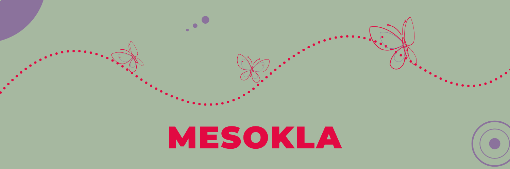
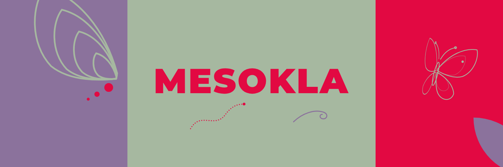
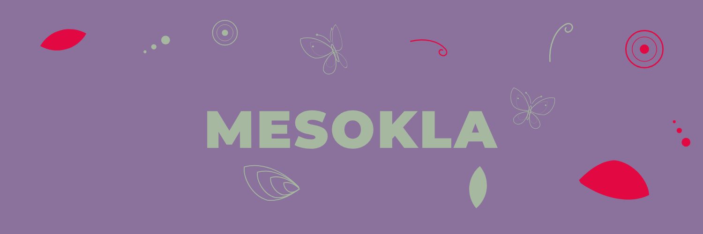

01
Mirror
Two moths flank a smaller wordmark, dotted trails leave from opposite corners, a petal and an eyespot balance the frame.
Six richer versions: a smaller wordmark, moths on both sides and identity elements spread across the frame. Each is shown on a black X profile with the avatar circle, so you can see what stays visible. The bottom-left corner under the avatar is kept free of anything important.

Two moths flank a smaller wordmark, dotted trails leave from opposite corners, a petal and an eyespot balance the frame.

Crimson ground, two large violet wings cropped at the corners, one moth arriving on a trail and one resting.

Violet ground with eyespots and petals in crimson and leaf, two moths facing each other above the wordmark.

One long dotted flight path waves across the whole banner, three moths of different sizes ride it.

Three colour blocks: contour lines on violet, the wordmark on leaf, a big moth on crimson.

The richest one: many small elements scattered around the wordmark like a pattern.